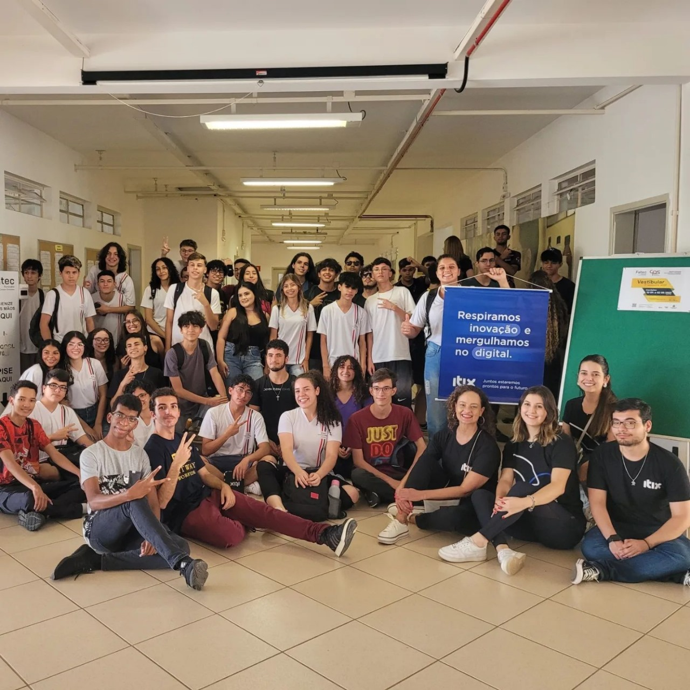

1º Ano
- 25/03/2022 -
Neste dia, houve uma reunião com as representantes das empresas Eduzz e Uno. Durante o encontro, foi apresentado o cronograma anual da Ptech, com as dinâmicas e atividades planejadas para nossa turma ao longo do ano.
- 19/04/2022 -
Neste dia ocorreu uma reunião com as representantes das empresas Eduzz, Uno e Tegra para falar sobre o tema da "Conduta Ética". No encontro, tivemos a oportunidade de trocar nossas ideias e visões sobre o tema, incentivando um diálogo produtivo sobre a relevância da ética empresarial e os princípios que orientam nossas ações e escolhas.
- 13/05/2022 -

Neste dia aconteceu uma visita na Eduzz com representantes da Eduzz e da Uno. Nesse evento, eles deram alguns brindes de uma reunião anterior que não foi registrada. Nessa reunião, os cinco melhores alunos da atividade sobre "ética" ganharam um brinde de cada empresa.
- 30/09/2022 -
Neste dia foi realizada uma reunião com as empresas Eduzz, Uno e Tegra, nessa reunião foi apresentado o tema: A empatia, ressaltando sua importância tanto no âmbito pessoal quanto no profissional.
- Quinto Ptech -
Antes da reunião mencionada no primeiro tópico, houve outra em que nos apresentamos às empresas. Nessa ocasião, compartilhamos nossas experiências com tecnologia, preferências e outros temas relevantes.
2º Ano
- 27/04/2023 -
Ocorreu uma reunião com as representantes das empresas Eduzz, Uno e Tegra sobre o tema: Dia a dia do Analista de Suporte.
- 04/05/2023 -
Neste dia o dono da Itix realizou uma palestra, tratando de assuntos ligados à empresa.
- 05/05/2023 -
Neste dia uma representante da empresa Itix conduziu uma palestra, abordando em detalhes temas relacionados à tecnologia e à inteligência artificial.
- 22/09/2023 -
Ocorreu uma palestra no teams com o tema: Como gerenciar seu talento, na reunião também abordaram dicas e técnicas para elaborar um currículo melhor.
- 16/11/2023 -
Aconteceu um treinamento com um representante da empresa Itix, onde aplicamos o método Scrum em um projeto sobre Reciclagem.
3º Ano
- 08/04/2024 -
Assistimos a uma palestra presencial com o representante da empresa Itix, o tema principal era Criatividade e Inovação: Um Desafio Constante.
- 23/05/2024 -
Participamos de uma palestra na Etec Fernando Prestes, apresentada por Guilherme Bastos, da empresa Tegra. O tema da palestra foi: As possibilidades da IA no mercado de trabalho.
- 27/05/2024 -
Assistimos a uma palestra online organizada pelo empresa Eduzz e apresentada por Victor Palencia, que abordou o tema Liderança e Gestão 3.0.
- 18/06/2024 -

Participamos de um bate-papo com alguns estagiários da Itix, E depois, assistimos a uma palestra com o tema Explorando Homelabs: Como criar seu próprio ambiente de desenvolvimento pode transformar sua carreira em TI, apresentada pelo palestrante Edmilson.
- 31/07/2024 -
Participamos uma palestra da empresa Eduzz com o tema: Hacker do bem e a segurança digital no dia-a-dia, apresentada pelo palestrante Luiz Milagres.
- 28/08/2024 -
Participamos de uma palestra da empresa Eduzz, com o tema: Você é uma pessoa organizada?, apresentada pelos palestrantes Vinicius e Michele.
- 29/08/2024 -
Neste dia participamos de uma palestra da empresa Uno com o tema: Fluxo de Operações Comercial, apresentada pelos palestrantes André Lopes e Tamiris Marciano.
- 05/09/2024 -
Neste dia participamos uma palestra presencial da empresa Tegra com o tema: Quais as tendências da área de TI com a virada da IA Generativa e outras tecnologias, apresentada pelo palestrante Guilherme Bastos.
- 19/09/2024 -
Participamos de uma palestra da empresa Uno com o tema: Ingressando no mercado de Trabalho Autoconhecimento e Marca Pessoal, apresentada pela palestrante Liliane Pereira.
- 24/09/2024 -
Neste dia participamos de uma palestra da empresa Eduzz com o tema Capricho: skill cada vez mais raro no Mercado, apresentada pelo palestrante Luiz Milagres.
10/10/2024
Assistimos a uma palestra da Tegra com o tema: 'Desenvolvimento Low Code', apresentada pelo palestrante Guilherme Bastos .
17/10/2024
Neste dia assistimos a uma palestra da IOCHPE pelo Youtube com o tema: Educação, apresentada pela palestrante Flavia Freitas.